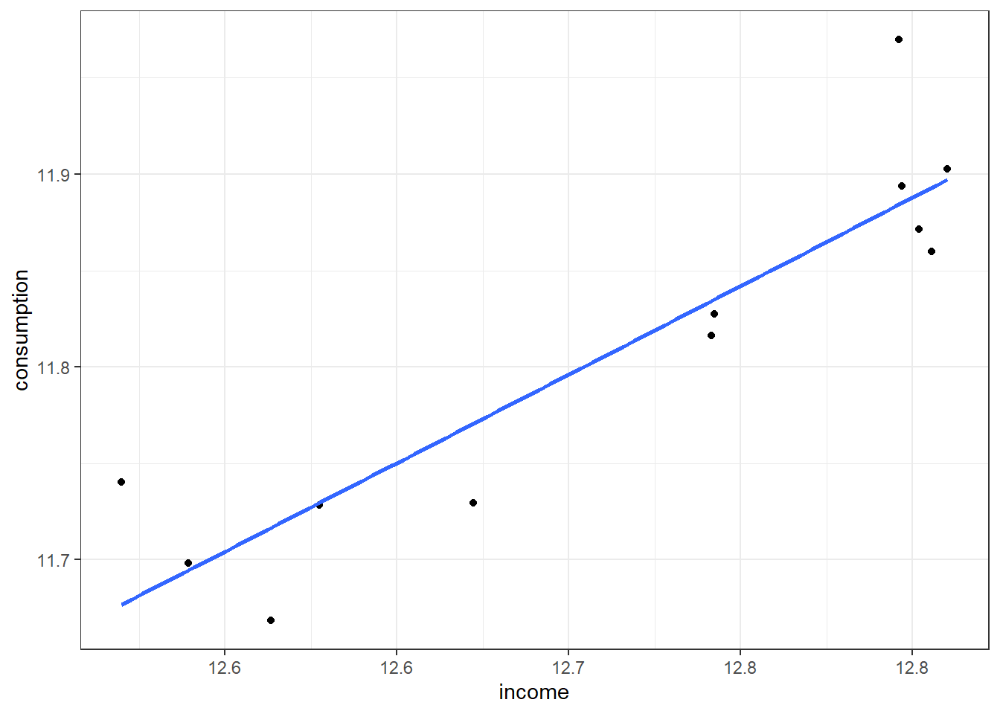
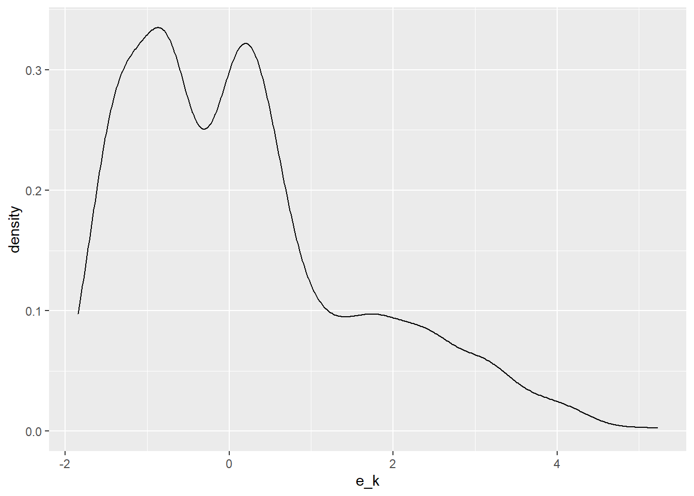

Chapter 16 Multiple Linear Regression
16.1 The more perfect relationship
16.2 Arrays and You
Arrays have rows and columns and are akin to tables. All of Excel’s worksheets are organized into cells that are tables with columns and rows. Data frames are more akin to tables in data bases. Here are some simple matrix arrays and functions. We start by making a mistake:
## [,1] [,2] [,3] [,4]
## [1,] 1 4 7 10
## [2,] 2 5 8 11
## [3,] 3 6 9 1The matrix() function takes as input here the sequence of numbers from 1 to 11. It then tries to put these 11 elements into a 4 column array with 3 rows. It is missing a number as the error points out. To make a 4 column array out of 11 numbers it needs a twelth number to complete the third row. We then type in these statements
## [,1] [,2] [,3] [,4]
## [1,] 1 4 7 10
## [2,] 2 5 8 11
## [3,] 3 6 9 12## [,1] [,2] [,3] [,4]
## [1,] 1 4 7 10
## [2,] 2 5 8 11
## [3,] 3 6 9 12In A we take 12 integers in a row and specify they be organized into 4 columns, and in R this is by row. In the next statement we see that A.col and column binding cbind() are equivalent.
## [,1] [,2] [,3] [,4]
## [1,] 1 2 3 4
## [2,] 5 6 7 8
## [3,] 9 10 11 12## [,1] [,2] [,3] [,4]
## [1,] 1 4 7 10
## [2,] 2 5 8 11
## [3,] 3 6 9 12## [,1] [,2] [,3] [,4]
## [1,] TRUE TRUE TRUE TRUE
## [2,] TRUE TRUE TRUE TRUE
## [3,] TRUE TRUE TRUE TRUEUsing the outer product allows us to operate on matrix elements, first picking the minimum, then the maximum of each row. The pmin and pmax compare rows element by element. If you used min and max you would get the minimum and maximum of the whole matrix.
## [,1] [,2] [,3] [,4]
## [1,] 0.75 0.75 0.75 0.75
## [2,] 0.75 1.00 1.00 1.00
## [3,] 0.75 1.00 1.25 1.25
## [4,] 0.75 1.00 1.25 1.50## [,1] [,2] [,3] [,4]
## [1,] 0.75 1.00 1.25 1.5
## [2,] 1.00 1.00 1.25 1.5
## [3,] 1.25 1.25 1.25 1.5
## [4,] 1.50 1.50 1.50 1.5We build a symmetrical matrix and replace the diagonal with 1. A.sym looks like a correlation matrix. Here all we were doing is playing with shaping data.
## [,1] [,2] [,3] [,4]
## [1,] -0.50 -0.25 0.00 0.25
## [2,] -0.25 -0.50 -0.25 0.00
## [3,] 0.00 -0.25 -0.50 -0.25
## [4,] 0.25 0.00 -0.25 -0.50## [,1] [,2] [,3] [,4]
## [1,] 1.00 -0.25 0.00 0.25
## [2,] -0.25 1.00 -0.25 0.00
## [3,] 0.00 -0.25 1.00 -0.25
## [4,] 0.25 0.00 -0.25 1.0016.2.1 Running a regression
The inner product %*% cross-multiplies successive elements of a row with the successive elements of a column. If there are two rows with 5 columns, there must be a matrix at least with 1 column that has 5 rows in it.
Let’s run these statements.

rgamma allows us to generate n.sim versions of the gamma distribution with scale parameter 0.5 and shape parameter 0.2. rlnorm is a popular financial return distribution with mean 0.15 and standard deviation 0.25. We can call up ??distributions to get detailed information. Let’s plot the histograms of each simulated random variate using hist().
The cbind function binds into matrix columns the row arrays x.1 and x.2. These might be simulations of operational and financial losses. The X matrix could look like the “design” matrix for a regression.
Let’s simulate a response vector, say equity, and call it y and look at its histogram.
Now we have a model for \(y\):
\[ y = X \beta + \varepsilon \]
where \(y\) is a 100 \(\times\) 1 (rows \(\times\) columns) vector, \(X\) is a 100 \(\times\) 2 matrix, \(\beta\) is a 2 \(\times\) 1 vector, and \(\epsilon\) is a 100 \(\times\) 1 vector of disturbances (a.k.a., “errors”).
Multiplying out the matrix term \(X \beta\) we have
\[ y = \beta_1 x_1 + \beta_2 x_2 + \varepsilon \]
where \(y\), \(x_1\), \(x_2\), and \(\varepsilon\) are all vectors with 100 rows for simulated observations.
If we look for \(\beta\) to minimize the sum of squared \(\varepsilon\) we would find that the solution is
\[ \hat{\beta} = (X^T X)^{-1} X^{T} y. \]
Where \(\hat{\beta}\) is read as “beta hat”.
The result \(y\) with its hist() is

The rubber meets the road here as we compute \(\hat{\beta}\).
## [,1]
## x.1 1.42
## x.2 3.28The beta.hat coefficients are much different than our model for y. Why? Because of the innovation, error, disturbance term rnorm(n.sim, 1, 2) we added to the 1.5*x.1 + 0.8 * x.2 terms.
Now for the estimated \(\varepsilon\) where we use the matrix inner product %*%. We need to be sure to pre-multiply beta.hat with X!
We see that the “residuals” are almost centered at 0.
16.2.2 More about residuals
For no charge at all let’s calculate the sum of squared errors in matrix talk, along with the number of obervations n and degrees of freedom n - k, all to get the standard error of the regression e.se. Mathematically we are computing
\[ \sigma_{\varepsilon} = \sqrt{\sum_{i=1}^N \frac{\varepsilon_i^2}{n-k}} \]
## [,1]
## [1,] 2266## [1] 100## [1] 2## [,1]
## [1,] 4.81The statement dim(X)[1] returns the first of two dimensions of the matrix X.
Finally, again for no charge at all, lets load library psych (use install.packages("psych") as needed). We will use pairs.panels() for a pretty picture of our work in this try out. First column bind cbind() the y, X, and e arrays to create a data frame for pairs.panel().
We then invoke the pairs.panels() function using the all array we just created. The result is a scatterplot matrix with histograms of each variate down the diagonal. The lower triangle of the matrix is populated with scatterplots. The upper triangle of the matrix has correlations depicted with increasing font sizes for higher correlations.

We will use this tool again and again to explore the multivariate relationships among our data.
16.3 More Array Work
We show off some more array operations in the following statements.
## [1] 4## [1] 4## [1] 4 4We calculate the number of rows and columns first. We then see that these exactly correspond to the two element vector produced by dim. Next we enter these statements into the console.
## [1] 3.00 3.75 4.25 4.50## [1] 3.00 3.75 4.25 4.50## [1] 3.00 3.75 4.25 4.50## [1] 3.00 3.75 4.25 4.50We also calculate the sums of each row and each column. Alternatively we can use the apply function on the first dimension (rows) and then on the second dimension (columns) of the matrix. Some matrix multiplications follow below.
## [,1] [,2] [,3] [,4]
## [1,] 0.750 0.750 0.812 0.875
## [2,] 0.375 0.562 0.500 0.500
## [3,] 0.375 0.500 0.688 0.625
## [4,] 0.750 0.938 1.125 1.375Starting from the inner circle of embedded parentheses we pull every row (the [,col] piece) for columns from the first to the second dimension of the dim() of A.min. We then transpose (row for column) the elements of A.min and cross left multiply in an inner product this transposed matrix with A.sym.
We have already deployed very useful matrix operation, the inverse. The R function solve() provides the answer to the question: what two matrices, when multiplied by one another, produces the identity matrix? The identity matrix is a matrix of all ones down the diagonal and zeros elsewhere.
## [,1] [,2] [,3] [,4]
## [1,] 4.952380952380952550 -3.05 -1.14 -1.52
## [2,] -2.285714285714285587 6.86 -2.29 0.00
## [3,] 0.000000000000000127 -2.29 6.86 -2.29
## [4,] -1.142857142857143016 -1.14 -3.43 3.43Now we use our inverse with the original matrix we inverted.
## [,1] [,2] [,3] [,4]
## [1,] 0.999999999999999778 0.000000000000000000 0.000000000000000000 0.000000000000000000
## [2,] 0.000000000000000222 1.000000000000000222 0.000000000000000000 0.000000000000000000
## [3,] 0.000000000000000111 0.000000000000000111 1.000000000000000000 0.000000000000000444
## [4,] 0.000000000000000222 -0.000000000000000444 -0.000000000000000888 1.00000000000000000016.4 Exercising the model
16.4.1 Exercise 1: housing market determinants
16.4.2 Exercise 2: risk driver model using regression analysis
16.4.2.1 Problem
We work for a healthcare insurer and our management is interested in understanding the relationship between input admission and outpatient rates as drivers of expenses, payroll, and employment. We gathered a sample of 200 hospitals in a test market in this data set.
16.4.2.2 Questions
- Build a table that explores this data set variable by variable and relationships among variables.
## hospital beds admissions outpatients births expense payroll fte
## 1 1 210 7713 86982 312 56831 22061 792
## 2 2 347 16065 149222 1077 127223 55799 1762
## 3 3 511 23028 222565 1027 157093 61326 2310
## 4 4 142 4338 36710 355 24462 10503 328
## 5 5 40 905 13350 168 13730 6368 181
## 6 6 220 15563 88721 3810 93257 33920 1077## hospital beds admissions outpatients births expense payroll fte
## 195 195 70 2089 24369 387 17257 7425 216
## 196 196 334 15696 102641 1946 168045 78118 1593
## 197 197 190 6395 244254 545 79859 33639 1055
## 198 198 122 441 0 0 15321 8878 399
## 199 199 170 7244 167454 838 58247 25018 834
## 200 200 73 352 9714 51 4565 2228 104## hospital beds admissions outpatients births
## Min. : 1.0 Min. : 7 Min. : 111 Min. : 0 Min. : 0
## 1st Qu.: 50.8 1st Qu.: 84 1st Qu.: 1615 1st Qu.: 27316 1st Qu.: 0
## Median :100.5 Median : 160 Median : 4777 Median : 65329 Median : 480
## Mean :100.5 Mean : 210 Mean : 6832 Mean : 98225 Mean : 874
## 3rd Qu.:150.2 3rd Qu.: 270 3rd Qu.: 9766 3rd Qu.:123263 3rd Qu.:1309
## Max. :200.0 Max. :1297 Max. :37375 Max. :813369 Max. :5699
## expense payroll fte
## Min. : 2082 Min. : 1053 Min. : 50
## 1st Qu.: 20544 1st Qu.: 8693 1st Qu.: 314
## Median : 43364 Median : 20740 Median : 590
## Mean : 67140 Mean : 30501 Mean : 862
## 3rd Qu.: 89898 3rd Qu.: 40275 3rd Qu.:1095
## Max. :367706 Max. :188865 Max. :4087- Investigate the influence of admission and outpatient rates on expenses and payroll. First, form these arrays.
## [1] 56831 127223 157093 24462 13730 93257## 1 admissions outpatients
## [1,] 1 7713 86982
## [2,] 1 16065 149222
## [3,] 1 23028 222565
## [4,] 1 4338 36710
## [5,] 1 905 13350
## [6,] 1 15563 88721Next, compute the regression coefficients.
## [,1]
## 1 -118.9178
## admissions 8.6995
## outpatients 0.0797Finally, compute the regression statistics.
## [,1]
## [1,] 171528065201## [1] 200## [1] 3## [,1]
## [1,] 29508- Use this code to investigate further the relationship among predicted expenses and the drivers, admissions and outpatients.

16.4.3 Exercise 3: commercial loan projection using regression
16.4.3.1 Purpose and problem
This project will allow us to practice various R features using live data to support a decision regarding the provision of captive financing to customers at the beginning of this chapter. We will focus on translating regression statistics into R, plotting results, and interpreting ordinary least squares regression outcomes.
As we researched how to provide captive financing and insurance for our customers we found that we needed to understand the relationships among lending rates and various terms and conditions of typical equipment financing contracts.
We will focus on one question:
What is the influence of terms and conditions on the lending rate of fully committed commercial loans with maturities greater than one year?
The data set commloan.csv contains data from the St. Louis Federal Reserve Bank’s FRED website we will use to get some high level insights. The quarterly data extends from the first quarter of 2003 to the second quarter of 2016 and aggregates a survey administered by the St. Louis Fed. There are several time series included. Each is by the time that pricing terms Were set and by commitment, with maturities more than 365 Days from a survey of all commercial banks. Here are the definitions.
rate: weighted-average effective loan rate in per cent per annum
prepay: per cent of value of loans subject to prepayment penalty per annum
maturity: weighted-average maturity/repricing interval in days
size: average loan size in thousands USD
volume: total value of loans in millions USD
16.4.4 Work Flow
- Prepare the data.
Visit the FRED website. Include any information on the site to enhance the interpretation of results.
Use
read.csvto read the data intoR. Be sure to set the project’s working directory where the data directory resides. Usena.omit()to clean the data.Assign the data to a variable called
x.data. Examine the first and last 5 entries. Run asummaryof the data set.
## date prepaypenalty maturity rate size volume
## 1 4/1/2003 16.5 124 3.77 449 11406
## 2 7/1/2003 18.1 70 3.09 356 14586
## 3 10/1/2003 44.9 48 2.83 532 21022
## 4 1/1/2004 30.4 87 3.06 602 21472
## 5 4/1/2004 23.5 68 2.97 600 22359
## 6 7/1/2004 20.0 80 3.36 593 23780## date prepaypenalty maturity rate size volume
## 49 4/1/2015 17.8 65 2.47 1151 24620
## 50 7/1/2015 16.9 76 2.30 1405 30586
## 51 10/1/2015 11.7 77 2.31 1534 36840
## 52 1/1/2016 13.6 66 2.43 1317 36316
## 53 4/1/2016 20.6 93 2.63 1227 24803
## 54 7/1/2016 14.5 66 2.41 1460 40682## date prepaypenalty maturity rate size volume
## 1/1/2004: 1 Min. : 8.8 Min. : 40 Min. :2.24 Min. : 356 Min. :11406
## 1/1/2005: 1 1st Qu.:16.9 1st Qu.: 68 1st Qu.:2.48 1st Qu.: 640 1st Qu.:15451
## 1/1/2006: 1 Median :20.7 Median : 89 Median :2.83 Median : 824 Median :18670
## 1/1/2007: 1 Mean :23.1 Mean : 95 Mean :3.65 Mean : 882 Mean :20824
## 1/1/2008: 1 3rd Qu.:29.9 3rd Qu.:112 3rd Qu.:4.20 3rd Qu.:1018 3rd Qu.:24258
## 1/1/2009: 1 Max. :51.9 Max. :396 Max. :7.41 Max. :1715 Max. :40682
## (Other) :48- What anomalies appear based on these procedures?
- Explore the data.
- Let’s plot the time series data using this code:

Describe the data frame that
melt()produces.Let’s load the
psychlibrary and produce a scatterplot matrix. Interpret this exploration.
- Analyze the data.
- Let’s regress
rateon the rest of the variables inx.data. To do this we form a matrix of independent variables (predictor or explanatory variables) in the matrixXand a separate vectoryfor the dependent (response) variablerate. We recall that the1vector will produce a constant intercept in the regression model.
## [1] 3.77 3.09 2.83 3.06 2.97 3.36## 1 prepaypenalty maturity size volume
## 1 1 16.5 124 449 11406
## 2 1 18.1 70 356 14586
## 3 1 44.9 48 532 21022
## 4 1 30.4 87 602 21472
## 5 1 23.5 68 600 22359
## 6 1 20.0 80 593 23780Explain the code used to form
yandX.Calculate the \(\hat{\beta}\) coefficients and interpret their meaning.
## [,1]
## 1 7.7714381
## prepaypenalty -0.0696900
## maturity 0.0064000
## size -0.0020414
## volume -0.0000635- Calculate actual and predicted
ratesand plot using this code.
Insert explanatory comments into the code chunk to document the work flow for this plot.
Interpret the graphs of actual and residual versus predicted values of
rate.Calculate the standard error of the residuals, Interpret its meaning.
## [,1]
## [1,] 88.6## [1] 54## [1] 5## [,1]
## [1,] 1.34- Interpret and present results.
We will produce an
R Markdowndocument with code chunks to document and interpret our results.The format will introduce the problem to be analyzed, with sections that discuss the data to be used, and which follow the work flow we have defined.